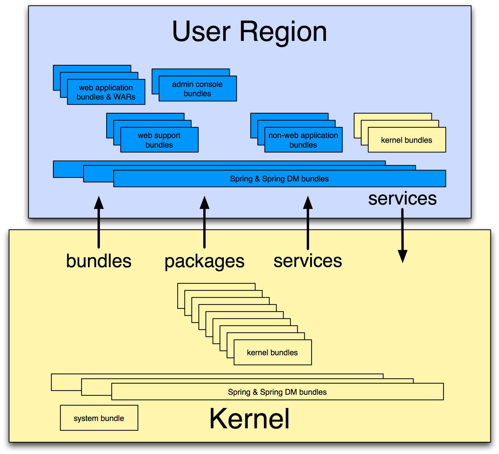

External repositories are created by scanning a directory which contains artifacts, possibly in nested directories. The repository configuration specifies a pattern which says which files should be treated as artifacts. After the repository is created, changes to the directory do not affect the repository content.
Virgo's default repository configuration, in configuration/org.eclipse.virgo.repository.properties, specifies an external repository created from the
repository/ext directory.
Watched repositories are created by scanning a directory which contains artifacts but no nested directories. All files in the directory are treated as artifacts. The directory is re-scanned periodically and the interval between re-scans is specified in the repository configuration. The directory is also re-scanned when an artifact is deployed into Virgo. Changes detected by re-scanning are reflected in the repository content. Note that changing the content of a watched repository does not cause artifacts to be deployed into Virgo, refreshed, or undeployed.
Virgo's default repository configuration specifies a watched repository based on the contents of the repository/usr directory.
A remote repository refers to a repository hosted by a Virgo instance sometimes known as a repository server.
The hosted repository is configured using the file configuration/org.eclipse.virgo.apps.repository.properties and may be either an external or a watched
repository.
The remote repository is accessed by a Virgo instance sometimes known as a repository client. The repository client is normally a different instance of Virgo to the instance hosting the repository, but it can be the same instance (which is handy for testing). The remote repository periodically downloads its index from the hosted repository. The period between downloads may be configured in the repository configuration. The remote repository also caches artifacts which have secure hashes associated with them in the hosted repository. Only bundles currently have secure hashes associated with them. The secure hash is used to determine when a cached artifact is stale and needs to be freshly downloaded.
The Virgo repository is configured as a chain of external, watched, and remote repositories. The chain is a list which is searched in the configured order. The effect of this search order is that an artifact with a given type, name, and version which appears in more than one repository in the chain is only accessed from the first repository in the chain in which it appears. Abstractly, the repository chain behaves as a single repository, but its content may mutate in quite a different way to the content of an individual external, watched, or remote repository.
Virgo provides a way of grouping together a collection
of OSGi bundles and other artifacts which comprise a single application.
These artifacts are placed in a JAR file with extension “.par”. This is called a PAR file.
All the bundles in a PAR file are resolved together and so mutual dependencies are permitted.
At runtime a PAR file provides a scope in the sense that bundles inside the PAR file may depend on packages and services outside the PAR file, but bundles outside the PAR file may not depend on packages and services provided by the PAR file.
Virgo also provides the plan artifact as another way of grouping bundles and other artifacts into an application. A plan is a file (in XML format) listing a collection of artifacts. The artifacts referred to by a plan reside in the Virgo provisioning repository.
In addition to PARs and plans, which are used for deploying groups of artifacts, Virgo provides libraries as a way of grouping together a collection
of bundles that can then be imported into an application using the Virgo-specific Import-Library manifes header.
Conceptually, VTS can be divided into two separate subsystems, one of which actually encompases the other:
See The Virgo Kernel for additional information.
See The User Region for additional information.
When you download and install Virgo Tomcat Server you get both the kernel and web server support (configured in the user region). You can also download and use the kernel on its own if you do not plan on deploying Web applications or using the web-based Admin Console and you'll get the kernel and a minimal user region (with no web support).
The following graphic shows how the kernel and user region make up VTS:
|  |
The Virgo Kernel encapsulates almost all of VTS except for the deployment of Web applications. In sum, the kernel provides the following VTS features:
Deployment of non-Web artifacts, such as OSGi bundles, PARs, plans, and configuration artifacts.
Local and hosted repositories
Scoping
Hot deployment
User region
Auto-provisioning
System and application tracing and dump support
Spring beans and Spring DM support
See Configuring VTS for details about configuring the kernel to better suit your environment.
The user region isolates the kernel from deployed applications, including both your own user applications and the user-oriented VTS applications such as the Admin Console. This means that the kernel is mostly invisible to applications and to application management. This is because most of the kernel bundles are not installed in the user region (apart from a few needed for region management). The necessary function to support the kernel runs in the OSGi framework, but the user region applications cannot see it, except for the services that are normally offered.
This isolation has many benefits. For example, it is not necessary for the kernel and user applications to use the same version of the Spring Framework. In fact the kernel installs only those parts of the Spring Framework that it needs. If you update the kernel, it is far less likely that you will also need to upgrade or adjust the applications to accomodate a new version of the kernel. The kernel implementation is therefore much more stable and resilient and applications are much more likely to survive kernel upgrades between releases.
When you install VTS, the kernel creates a single user region. The kernel and the user region are configured independently of each other; see Configuring VTS for details.
Finally, the isolation provided by the user region together with scoped applications and plans solve common dependency problems that occur when using OSGi.